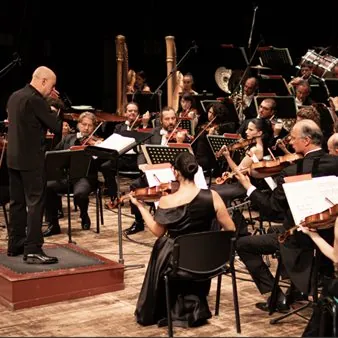

da sab 31 ott a sab 12 dic
Festival Internazionale di Musica Contemporanea Trieste Prima
Il compositore triestino Giampaolo Coral ha fondato nel 1987 il festival Trieste Prima, accendendo una scintilla creativa che brilla ancora oggi. A quarant'anni di distanza, l'Associazione Chromas, guidata dal compositore e docente Corrado Rojac, celebra questa straordinaria…
 Indicazioni
Indicazioni
- Costi e prenotazioni
- Costo non indicato · Prenotazione non indicata
- Programma
- Programma da verificare. Apri la fonte ufficiale per orari e possibili aggiornamenti.
- In caso di maltempo
- Nessuna indicazione specifica pubblicata.
- Note
- Acquisito automaticamente dalla fonte.
L’EVENTO
Descrizione completa
Il compositore triestino Giampaolo Coral ha fondato nel 1987 il festival Trieste Prima, accendendo una scintilla creativa che brilla ancora oggi. A quarant'anni di distanza, l'Associazione Chromas, guidata dal compositore e docente Corrado Rojac, celebra questa straordinaria eredità con la rassegna “Quarant'anni di Nuova Musica” che si terrà dal 31 ottobre al 12 dicembre. «Il progetto di Coral era semplice e ambizioso: dare voce alle avanguardie e a tutti quei compositori che non avevano visibilità», ricorda il musicologo Ivano Cavallini. Oggi Rojac raccoglie quel testimone: «“Chi non sogna è un essere incosciente ormai totalmente assimilato nell'ingranaggio conformista della società”, scriveva Coral. Quel sogno è diventato realtà e continua a farci conoscere una musica “testimone della propria epoca, con le sue contraddizioni e laceranti inquietudini”». Ogni concerto della rassegna sarà preceduto da un incontro illustrativo, per avvicinare sempre più il pubblico alla musica contemporanea.Il sipario si alzerà sabato 31 ottobre alle ore 18.00 al Conservatorio Tartini di Trieste con la presentazione del libro a cura di Cavallini: “Musica oltre l'avanguardia. Giampaolo Coral tra letteratura, arti figurative e sapienza ermetica”, presentato da Stefano Sacher con interventi musicali di Matteo Chiodini.
Il 7 novembre , alle ore 18.00, sempre nel conservatorio triestino, dopo l’intervento dal titolo “Comporre oggi”, seguirà il concerto “Nel suono della pioggia”, con la violista Valentina Danelon e l’arpista Nicoletta Sanzin in musiche di Glass, Kikta, Miyagi, Pagotto, Ajdič, Viozzi e Andrès. Se questo appuntamento gioca con l'acqua, quello del 16 novembre, alle ore 19.30 alla Sala del Ridotto del Teatro Verdi di Trieste, si tingerà di colore. Dopo l’incontro con Fabián Pérez Tedesco, a cura di Rojac, dal titolo “Musica e pittura”, seguiranno le “Suggestioni pittoriche” con il flauto di Roberto Fabbriciani, il violino di Ivan Novinc e il Cantus Ansambl di Zagabria guidato da Ivan Josip Skender. Il 24 novembre , sempre al Verdi, salirà sul podio l’Orchestra di Padova e del Veneto, con Maria Iaiza al pianoforte ed Adriano Martinolli D’Arcy chiamato a dirigere un programma intenso di suggestioni con opere di Coral, Webern, Donatoni, Rojac e Malipiero. Ad anticipare il concerto, alle ore 19.30, Cavallini presenterà “Giampaolo Coral margivagante dell’anima”.
Il cerchio si chiuderà il 12 dicembre alla Galleria “Passage Arte Contemporanea”. Un “Omaggio a Morton Feldman” in un contesto intimo e visivo, dove il violino di Vera Sturman, la fisarmonica di Ingrid Peric e il live electronics di Elia Disiot, esploreranno le frontiere del suono, indagando il rapporto tra tradizione e nuove tecnologie attraverso una composizione sperimentale di Rojac. Tutti gli eventi sono ad ingresso libero. I programmi completi e tutti gli aggiornamenti sono consultabili sul sito chromas.it
IL PROGRAMMA
Programma e orari
Appuntamenti raccolti dalle fonti elencate. Dove manca un orario, non è ancora disponibile in questa scheda.
Programma pubblicato
- Dal 2026-10-31 al 2026-12-12
INFORMAZIONI UTILI
Prima di partire
- Controllare la fonte prima di partire.
ORGANIZZAZIONE